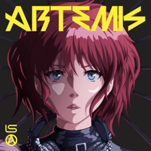
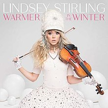
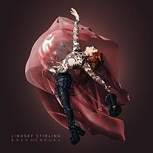
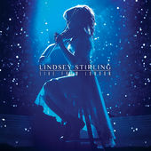
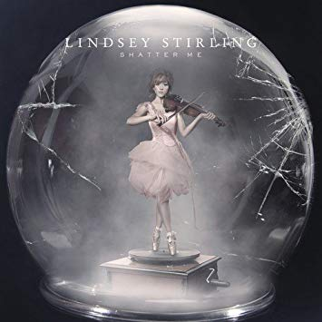
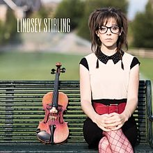
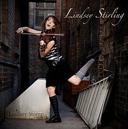
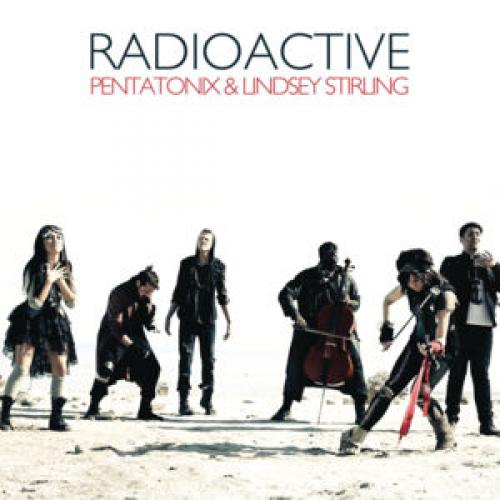
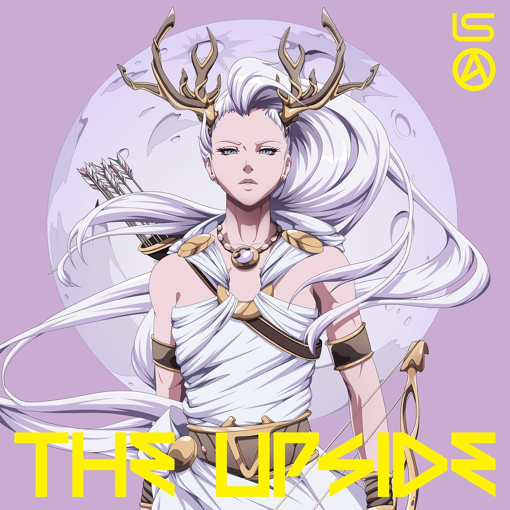
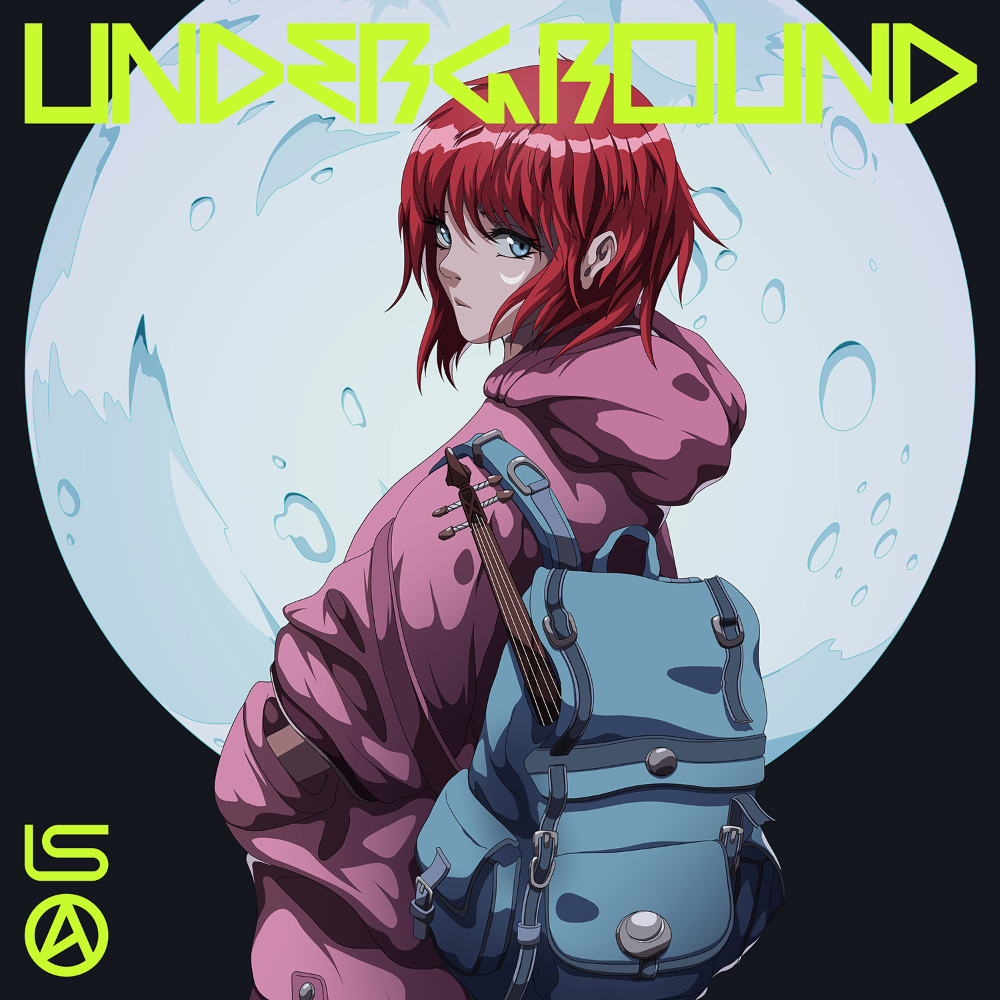

Integrantes:
Lindsey Stirling es una violinista, bailarina, vocalista, artista de performance y compositora estadounidense. Ella presenta actuaciones de violín coreografiadas, tanto en directo como en vídeos musicales encontrados en su canal de YouTube, que creó en 2007. Stirling interpreta una variedad de estilos musicales, de la música clásica al pop y del rock a la música electrónica de baile. Aparte de su trabajo original, su discografía contiene versiones de canciones de otros músicos y varias bandas sonoras.
Discografia
- Artemis 
- Warmer in the Winter 
- Dance of the Sugar Plum Fairy
- You're a Mean One, Mr. Grinch
- Christmas C'mon
- Carol of the Bells
- Angels We Have Heard on High
- I Saw Three Ships
- Let It Snow
- Warmer in the Winter
- What Child Is This
- All I Want for Christmas
- Time to Fall in Love
- Jingle Bell Rock
- Silent Night
- Brave Enough 
- Lost Girls
- Brave Enough
- The Arena
- The Phoenix
- Where Do We Go
- Those Days
- Prism
- Hold My Heart
- Mirage
- Don't Let This Feeling Fade
- First Light
- Love's Just a Feeling
- Something Wild
- Gavi's Song
- Lindsey Stirling: Live from London 
- Beyond the Veil
- Mirror Haus
- Electric Daisy Violin
- Night Vision
- Heist
- Swag
- We Are Giants (feat Dia Frampton)
- Transcendence
- All of Me
- Take Flight
- Moon Trance
- Roundtable Rival
- Master of Tides
- Crystallize
- Shatter Me (feat Lzzy Hale)
- Stars Align
- Shatter Me 
- Beyond the Veil
- Mirror Haus
- V-Pop
- Shatter Me
- Heist
- Roundtable Rival
- Night Vision
- Take Flight
- Ascendance
- We Are Giants
- Swag
- Master of Tides
- Eclipse
- Sun Skip
- Take Flight
- Lindsey Stirling 
- Electric Daisy Violin
- Zi-Zi's Journey
- Crystallize
- Song of the Caged Bird
- Moon Trance
- Minimal Beat
- Transcendence
- Elements
- Shadows
- Spontaneous Me
- Anti Gravity
- Stars Align
- Lindsey Stomp 
- Transcendence
- Song of the Caged Bird
- Spontaneous Me
| Underground | Artemis | Til the Light Goes Out | Between Twilight | Foreverglow |
| Love Goes On and On | Masquerade | Sleepwalking | Darkside | The Upside |
| Guardian | Aurora | The Upside (featuring Elle King) |
Canciones más populares
- Radioactive 
- The upside 
- Underground 
- Artemis
- Love goes on and on
Enlace sitio web oficial